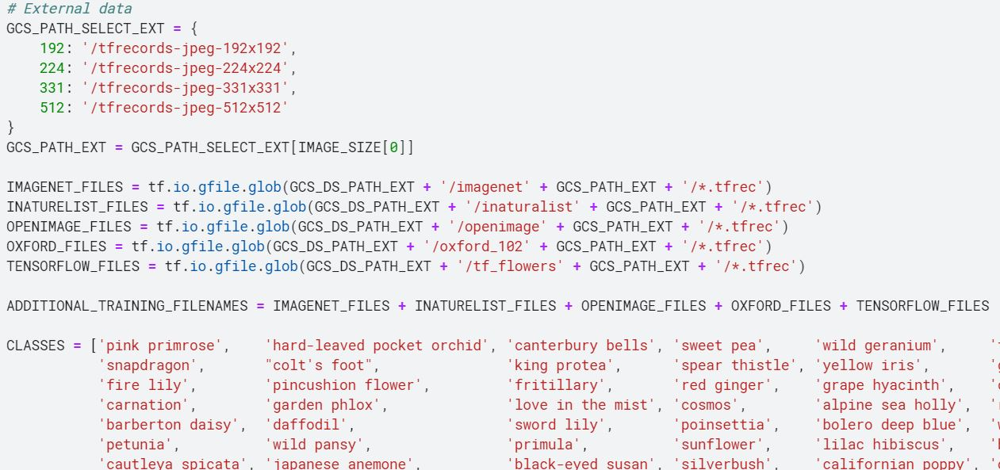
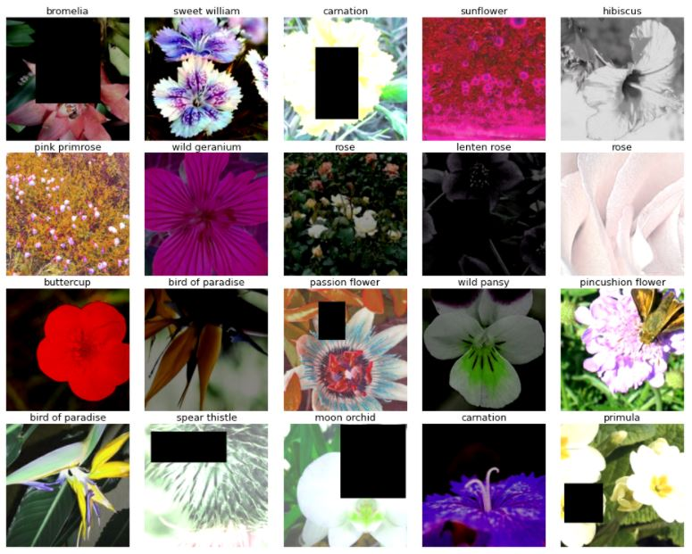
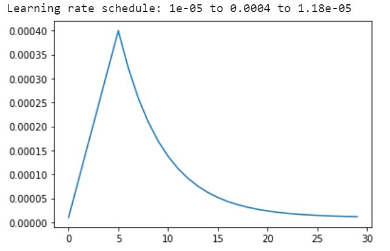
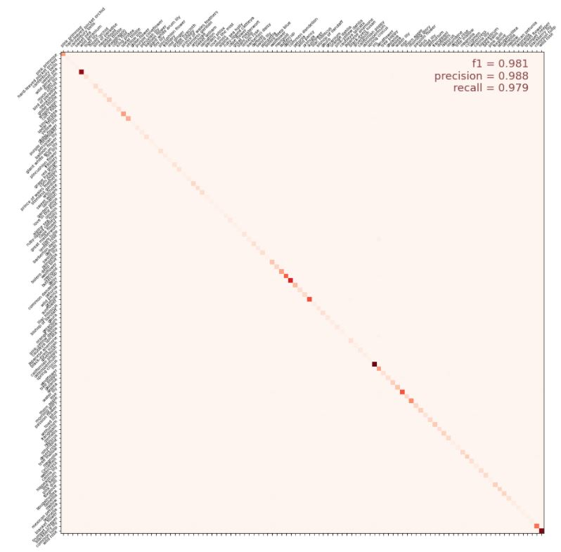
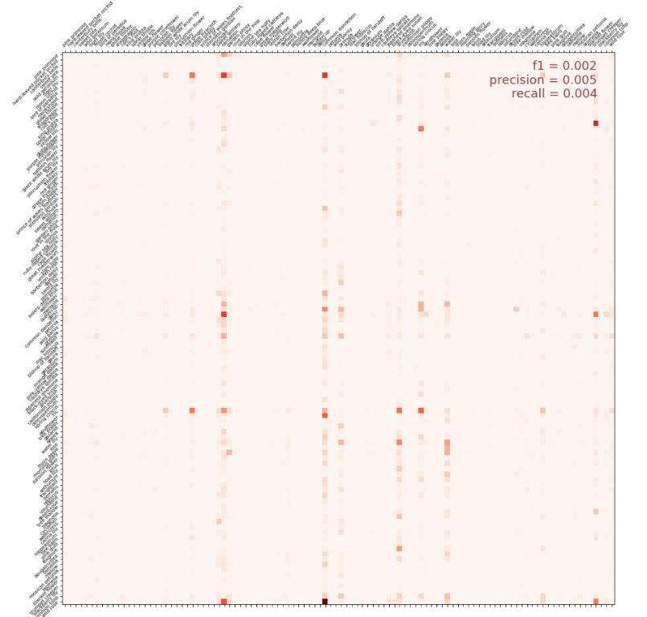

Flower ClassificationComputer Vision
Pre-trained Models | Augmentations | Ensembling

Pre-trained Models | Augmentations | Ensembling
This was my second project on Kaggle and I spent a significant amount of time trying to figure out how to place in the top 10% of this open competition. After 7 iterations of stacking one researched method after another into my model, I finally achieved an accuracy of roughly 97% allowing me to place in the top 10%.
The project was run on Kaggle and recommended the reliance on TPUs for the training as it was faster. Implementing the code to run using TPUs required some additional work though.
AUTO = tf.data.experimental.AUTOTUNE
# Detect hardware, return appropriate distribution strategy
try:
tpu = tf.distribute.cluster_resolver.TPUClusterResolver.connect() # TPU detection
strategy = tf.distribute.TPUStrategy(tpu)
except ValueError:
strategy = tf.distribute.MirroredStrategy() # for GPU or multi-GPU machinesTo set up and train neural networks for multi-label image classification, a few core steps are required:
The web has a wealth of datasets that may come from different sources (e.g. Kaggle alone had 5 different datasets for flower classification). It is possible to find datasets on the same topic if one searches hard enough although it is critical that the data is truly relevant to the model and is of quality, if not the additional data could actually hurt model performance.
For this section I trained the model on different combinations of datasets at varying resolutions to determine an optimal point between computation time, data size and data quality. For this instance, I decided to use all 5 datasets (amounting to around 80,000 images) but lowered the resolution from 512x512 pixels to 331x331. This was also in consideration of the image input dimensions required by the pre-trained models I intended to use.
Augmentation in the context of computer vision refers to the modification of data to increase the variation in data - resulting in an effective increase in dataset size. Note that this is not the same as increasing the dataset size as mentioned in the earlier step. Augmentation here refers to the application of filters that tweak each image as it is fed to the model batch-wise (a group of images).
Common augmentation include rotations, mirroring, adjusting picture properties (e.g. hue, saturation, brightness, warmth), zooming in/out and random blockout. Tensorflow has a suite of these augmentation that can be called immediately, however, if you want to make your own augmentations (as is the case for the random-blockout/erasing), sometimes custom functions are required.
def random_erasing(img, sl=0.1, sh=0.2, rl=0.4, p=0.3):
h = tf.shape(img)[0]
w = tf.shape(img)[1]
c = tf.shape(img)[2]
origin_area = tf.cast(h*w, tf.float32)
e_size_l = tf.cast(tf.round(tf.sqrt(origin_area * sl * rl)), tf.int32)
e_size_h = tf.cast(tf.round(tf.sqrt(origin_area * sh / rl)), tf.int32)
e_height_h = tf.minimum(e_size_h, h)
e_width_h = tf.minimum(e_size_h, w)
erase_height = tf.random.uniform(shape=[], minval=e_size_l, maxval=e_height_h, dtype=tf.int32)
erase_width = tf.random.uniform(shape=[], minval=e_size_l, maxval=e_width_h, dtype=tf.int32)
erase_area = tf.zeros(shape=[erase_height, erase_width, c])
erase_area = tf.cast(erase_area, tf.uint8)
pad_h = h - erase_height
pad_top = tf.random.uniform(shape=[], minval=0, maxval=pad_h, dtype=tf.int32)
pad_bottom = pad_h - pad_top
pad_w = w - erase_width
pad_left = tf.random.uniform(shape=[], minval=0, maxval=pad_w, dtype=tf.int32)
pad_right = pad_w - pad_left
erase_mask = tf.pad([erase_area], [[0,0],[pad_top, pad_bottom], [pad_left, pad_right], [0,0]], constant_values=1)
erase_mask = tf.squeeze(erase_mask, axis=0)
erased_img = tf.multiply(tf.cast(img,tf.float32), tf.cast(erase_mask, tf.float32))
return tf.cond(tf.random.uniform([], 0, 1) > p, lambda: tf.cast(img, img.dtype), lambda: tf.cast(erased_img, img.dtype))
def data_augment(image, label):
# Because these operations are not commutative, consider randomizing order of operations
image = tf.image.random_flip_left_right(image)
image = tf.image.random_flip_up_down(image)
image = tf.image.random_saturation(image, 0, 2)
image = tf.image.random_crop(image, [250,250,3], seed=1)
image = tf.image.resize(image, [331,331])
image = tf.image.random_brightness(image,max_delta=0.5)
image = tf.image.random_contrast(image,lower=0.5, upper=1.5)
image = tf.image.random_hue(image, 0.25, seed=1)
image = random_erasing(image)
return image, labelAfter applying the augmentations, it is always a good idea to display some of the augmented images from your training set to have a clear idea on what your augmentations are actually doing to the dataset.
Random block-out and brightness and hue augmentations have the most apparent effects.
There are a few key parameters that need to be determined when training a model: learning rate (proportional to how much the neural network updates its weights based on each batch's results), epochs (the number of times to feed the entire dataset through the network) and batch size (the number of datapoints to train on before updating the weights in the neural network).
The learning rate can also be set according to a schedule. In this context, I rely on pre-trained neural networks and do not want to modify the pre-trained weights in the network too significantly at the start of the training and hence a smaller learning rate is used, this learning rate gradually increases as the weights are expected to stabilize over time. Once the weights are close to optimal the learning rate is gradually reduced to allow only minor fine-tuning from the last few epochs.
Random block-out and brightness and hue augmentations have the most apparent effects.There are many ways to arrange an ensemble, but for this project I decided to simply add the predicted probabilities for each model (DenseNet201 and EfficientNet B7) together and take the label with the highest mean probability as the predicted label. This was because the accuracy achieved by both models were roughly the same (97-98%), we could also label the flowers according to the highest predicted probability across both models, or weigh the predicted probabilities according to the model's validated accuracy.
print('Calculating predictions...')
probs1 = run_inference(model1)
probs2 = run_inference(model2)
# ensemble by merging probabilities
probabilities = (probs1 + probs2)/2
predictions = np.argmax(probabilities, axis=-1)A confusion matrix is a good way to get an overview of where the model is failing to perform. Based on the information, conjectures can be made as to why the model fails to classify specific flowers correctly and how the dataset, augmentation, networks used can be tweaked to overcome this weakness. Along with the confusion matrix, it is typical to look at common model assessment metrics such as accuracy, recall, precision and F1-score.
In this case, the high accuracy of the model and larger number of flower labels prevents us from identifying any single flower that is poorly classified by the model. However, the same could not be said about my earlier models.
With my first model (which performed quite miserably), identifying vertical chains of hotspots (darker reds) that are off the diagonal of the confusion matrix enables us to isolate flowers which are more likely to be labeled incorrectly. Possible reasons for this could include a lack of data on that specific flower.
Striving to bring the accuracy of my model(s) to the maximum pushed me to test and optimize different aspects of this project and the insights are as listed below: